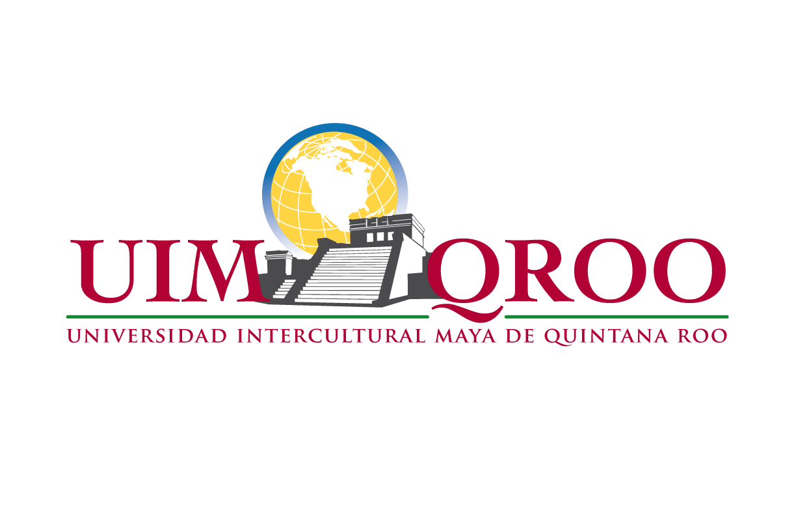

Martín Esquivel Pat Coordinador del PIMEI
Correo electrónico: martin.esquivel@uimqroo.edu.mx Tel: (997) 9780160 Ext. 1030
Dirección: CARRETEA MUNA-FELIPE CARRILLO PUERTO KM. 137, S/N PRESUMIDA, MUNICIPIO DE JOSÉ MARÍA MORELOS, QUINTANA ROO, C.P. 77870